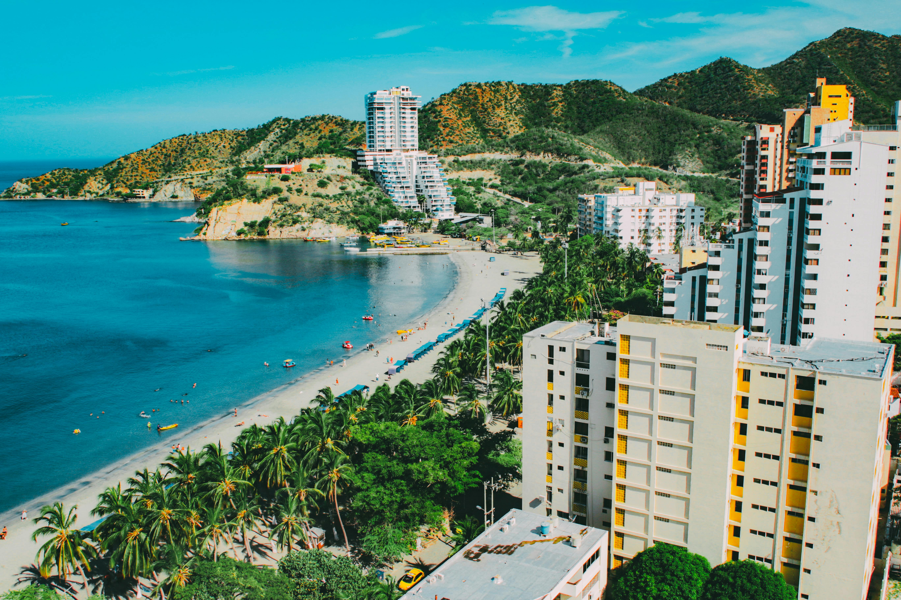

La ciudad más antigua de Colombia. Playas, jungla, Sierra Nevada y el Parque Tayrona en un solo destino caribeño único.
Santa Marta es única en el mundo: es el único lugar donde puedes pasar de una playa caribeña a la selva tropical, y de ahí a las nieves de la Sierra Nevada en pocas horas. Fundada en 1525, es la ciudad más antigua de América del Sur en territorio colombiano.
El Parque Nacional Natural Tayrona, a solo 30 minutos del centro, ofrece algunas de las playas más espectaculares de Colombia. Y para los aventureros, la travesía a la Ciudad Perdida (Teyuna) es una de las experiencias de trekking más impresionantes de Latinoamérica.

Clima, temporadas, el Parque Tayrona y todo lo esencial para aprovechar Santa Marta al máximo.
Las mejores épocas son diciembre–abril y julio–agosto. Son temporadas secas con cielos despejados, ideales para visitar el Tayrona y hacer el trekking a Ciudad Perdida con menor riesgo de lluvias.
Las lluvias son más intensas en mayo–junio y septiembre–noviembre. El Parque Tayrona cierra parcialmente en temporada de lluvias para recuperación ambiental. Consulta antes de planear tu visita.
El Parque Nacional Tayrona requiere reserva previa en línea a través del sistema de Parques Nacionales. El cupo diario es limitado. Recomendamos comprar la entrada con al menos 15 días de anticipación, especialmente en temporada alta.
En Santa Marta ciudad y en las playas del Tayrona, la temperatura promedia 28–33 °C. En Minca (900 m) baja a 22–26 °C, y en la Ciudad Perdida (1.200 m) puede hacer frío en las noches. Prepara ropa según tu itinerario.
Santa Marta es más económica que Cartagena. El centro histórico y El Rodadero tienen buena oferta de hospedaje a distintos precios. Para el Tayrona, contrata un transporte colectivo desde el mercado público (más económico) o un transfer privado.
El trekking a Ciudad Perdida dura entre 4 y 6 días (ida y vuelta), atravesando selva densa e ríos. Solo se puede hacer con una agencia autorizada. Nivel físico moderado-alto. Es una de las experiencias más impresionantes de Colombia.
Desde playas del Tayrona hasta la aventura en la Ciudad Perdida. Todos con asesoría personalizada.
Imagen del paquete
Más vendidoSanta Marta · Colombia
El plan clásico: ciudad, playas paradisíacas del Tayrona y un día en Minca para conocer la montaña.
Imagen del paquete
Santa Marta · Colombia
Para viajeros activos. Incluye el trekking a Ciudad Perdida de 4 días, con guía experto certificado y todo el equipamiento.
Imagen del paquete
PremiumSanta Marta · Colombia
La experiencia total del destino: Tayrona, Minca, tour histórico de la ciudad y excursión al Cabo San Juan.